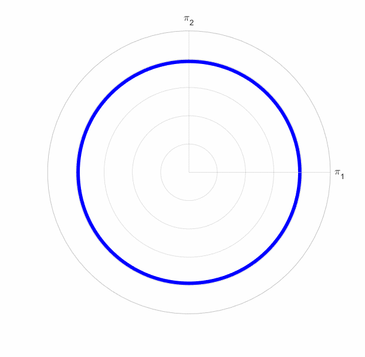

Example
It follows a step-by-step description of the implemented algorithm for an exemplary dataset. In particular, EUCLID (Efficient Unsupervised Constitutive Law Identification & Discovery) is applied to the displacement and net reaction force data that were generated based on the material model F1. The goal is to use the data to discover the material model, without knowing its specific mathematical form a priori.
Forward Problem (FEA)
We assume the material model F1 (for which the material parameters can be found in material/FYS_1_HardMix.m) and run the forward finite element simulation (see FEA_plate_elliptic_holes.m).
The results of the finite element analysis can be found in the ETH Research Collection under 20211130T010300_DATA_FYS_1_HardMix_plate_elliptic_holes_noise_1.mat.
Inverse Problem (EUCLID)
Data and Parameters
The input data for EUCLID and the parameters for the optimization process are defined in opt_input_HardMix.m.
First, it is defined whether a Matlab executable file (.mex file) should be used to accelerate the objective function evaluation (see Matlab Coder and MEX File Functions)
and over how many Matlab workers the independent optimization processes should be distributed (see Parallel Computing Toolbox and parfor).
in.use_mex = true;
in.n_workers = 24;
To consider the data corresponding to material model F1, the variable dataID has to be set to two.
dataID = 2;
To also consider noise and temporal denoising, we set:
in.noise_level = '1';
in.filter = 'sgolay';
in.filter_length = 50;
According to these choices the following string is assigned to the variable in.datafile:
'20211130T010300_DATA_FYS_1_HardMix_plate_elliptic_holes_noise_1_sgolay_50'
The string contains a timestamp that indicates when the data were generated and contains information about the material model, the geometry, the noise level and the smoothing method, respectively.
To load the .mat datafile with the above name, a path has to be added by changing the variable pathname in opt_input_HardMix.m accordingly.
The .mat datafile contains a struct array called data with all information provided by the finite element simulation,
such as for example the nodal displacements in data.results.u (see animation below) and net reaction forces in data.results.reaction.

Animation 1: Magnitude of displacement obtained from finite element simulations. The displacement is magnified by a factor of 100. Note that this is an examplary animation, it does not correspond to the data considered in the example.
In opt_input_HardMix.m, we further define parameters and hyperparameters for the optimization problem.
All input information needed for the optimization problem are stored in a struct array called in.
Optimization
After defining the elementary inputs in opt_input_HardMix.m, we start the optimization procedure by running opt_HardMix.m.
In opt_HardMix.m the parameters and the data are loaded and (as mentioned above) stored in the struct arrays in and data, respectively.
in = opt_input_HardMix();
load(in.datafile,'data')

Animation 2: Yield surface for different choices of theta.
The goal is now to find the unknown material parameters theta and hardening parameters H_isotropic, H_kinematic, which influence the shape of the plastic yield surface (see animation above) and the hardening behavior, respectively.
To find the material parameters, an objective function_handle fun_vec is defined.
fun_vec = def_objective_vec_HardMixVAF(in,data);
The function_handle takes the material parameters as input and returns a vector, whose sum of squared entries equals the objective function.
Note that the function_handle returns a vector instead of a scalar as this is a requirement for using the Matlab build in optimizer lsqnonlin (see below).
Taking a closer look at objective_vec_HardMixVAF.m provides a deeper insight in the internal processes of the objective function calculation.
Here, nested loops over all load steps, finite elements and quadrature points are implemented for calculating the internal forces.
To this end, the elasto-plastic return mapping algorithm, whose behavior depends on the yield function and hence the material parameters theta, H_isotropic, H_kinematic, needs to be applied (see local_problem_PlaneStressHardMixVAF_notan.m).
For decreasing the computational time needed for the cost function evalution, the function objective_vec_HardMixVAF.m is converted into a Matlab executable file (.mex file).
After defining the objective function we apply a preconditioning optimization by minimizing the objective function with respect to a reduced set of material parameter while keeping the other parameters fixed.
In this way, the approximate size of the yield surface is estimated.
Based on the preconditioning solution, multiple random initial guesses are generated and the objective function is minimized for different choices of the hyperparameter lambda_p.
The solutions and their corresponding objective function values are stored in a struct array called solution, which is saved as a .mat file with the name:
`202112T02011118_RESULTS_lsqnonlin_lb_parsplit_HardMixVAF_FYS_1_HardMix_plate_elliptic_holes_noise_1_sgolay_50`
Model Selection
As a final postprocessing step, a model with both high parsimony and low cost function value needs to be selected from the generated set of solutions.
To this end, selection_HardMix.m is executed.
Here, the hyperparameters for the model selection are chosen as:
threshold_factor_cost = 1.01;
threshold_factor_parameters = 5e-3;
As solutions were generated based on multiple initial guesses,
we choose for every choice of lambda_p the initial guess that corresponds to the lowest objective function value, resulting in one solution for every choice of lambda_p.
Afterwards, solutions with cost function values above a threshold are discarded as they are expected to provide low fitting accuracies.
From the remaining solutions, the solution with the highest sparsity, i.e., with the lowest regularization term, is selected.
Lastly, material parameters below a threshold are discarded.
The final solution is:
>> selection_HardMix('202112T02011118_RESULTS_lsqnonlin_lb_parsplit_HardMixVAF_FYS_1_HardMix_plate_elliptic_holes_noise_1_sgolay_50')
Selected regularization factor:
lambda_p = 256
Selected yield surface parameters:
theta = 0.22253 0.019857 0 0 0 0 0
Selected isotropic hardening parameters:
H_isotropic = 48.79915 0.5327857 601.8113
Selected kinematic hardening parameters:
H_kinematic = 199.8887 928.3547
The algorithm correctly identifies which features have to be active to describe the material behavior and at the same time correctly removes irrelevant features. The correct mathematical form of the material model F1 is identified, however, the material parameter values vary slightly compared to the true parameters as a consequence of the noise added to the displacement data.